Full Scale Rockets
Full-scale rockets are powerful launch vehicles designed to transport payloads, satellites, and even humans beyond Earth's atmosphere. Unlike small model rockets, these massive machines use advanced propulsion systems, sophisticated guidance technology, and cutting-edge materials to withstand the harsh conditions of space travel.
Rocket Parts
There are many parts that make up a rocket. For design and analysis, engineers group parts which have the same function into systems. There are four major systems in a full-scale rocket: the structural system, the payload system, the guidance system, and the propulsion system.
Structural System
The rocket’s frame, like an airplane fuselage, is made of strong yet lightweight materials like titanium or aluminum. It consists of vertical stringers and circular hoops, covered by a skin that may have thermal protection. This protects against heat from air friction and maintains cold temperatures for fuels. Some rockets have fins at the base for stability.
Payload System
A rocket's payload depends on its mission. Early rockets carried fireworks, while later ones transported explosives and nuclear warheads. Modified rockets launched satellites for communication, weather monitoring, spying, and space exploration. Special rockets were designed to send humans into orbit and to the Moon.
Guidance System
A rocket's guidance system includes sensors, computers, radars, and communication tools for flight control. Early rockets used vanes in the nozzle, while modern ones rotate the nozzle for maneuvering. It also ensures stability to prevent tumbling during flight.
Propulsion System
Rockets use liquid or solid propulsion systems. The V2 had a liquid engine with fuel, oxidizer tanks, pumps, and a combustion chamber. Modern rockets like the Space Shuttle and Delta II use solid rocket boosters.
-
Structural System
Frame, stringers, hoops, skin, fins
-
Payload System
Satellites, instruments, cargo, crew
-
Guidance System
Sensors, computers, radars, communication
-
Propulsion System
Fuel tanks, oxidizers, pumps, nozzles, combustion chamber
Fig: Structural System of Rocket
Fig: Payload System of Rocket
Fig: Guidance System of Rocket
Fig: Propulsion(electric) System of Rocket
Rocket Systems - Structural System
The structural system of a rocket includes all of the parts which make up the frame of the rocket; the cylindrical body, the fairings, and any control fins. The function of the structural system is to transmit the loads from the forces generated during the flight and to provide low aerodynamic drag for flight through the atmosphere.
Performance of a Rocket
Rocket structures must be strong but light weight. The performance of the rocket depends directly on the weight of the structure. A variety of mass ratios are used to characterize the structural weight of a rocket. The distribution of the structural weight also affects the center of gravity of the rocket which, in turn, affects the stability and control of the rocket. During the flight of a rocket to orbit, some parts of the structure are discarded in a process called staging.
Example - Atlas & Saturn V
The Atlas rocket was developed in the late 1950’s as an intercontinental ballistic missile. Two sustainer rocket engines were discarded during the launch, but the entire central sustainer section went into orbit. The Saturn V was a three stage rocket that sent astronauts to the Moon in 1969. The first stage was 138 feet tall, 33 feet in diameter, and weighed 305,000 pounds empty. The stage was filled with 4.5 million pounds of propellants prior to launch.
Fig: Atlas & Saturn V

Fig: Various Structural Systems of a Rocket
Rocket Systems - Payload System
A rocket's payload depends on its mission. Early rockets carried fireworks, later replaced by explosives on the German V2. Post-World War II, rockets evolved into ballistic missiles and satellite launchers for communication, weather, spying, and space exploration.
Parts of a Rocket Payload
1. Payload Bay – The compartment that houses satellites, scientific instruments, cargo, or crew modules.
2. Fairing – A protective shell that shields the payload from aerodynamic forces and is jettisoned after launch.
3. Deployment Mechanism – Systems like clamps, springs, or thrusters that release the payload into its intended orbit or trajectory.
4. Avionics & Sensors – Electronic components for navigation, communication, and data collection during the mission.
5. Thermal Protection – Insulation or coatings that protect the payload from extreme temperatures in space.
Human Payloads
Human payloads refer to astronauts and life-supporting systems carried by rockets for space missions. These payloads are designed to ensure safety, comfort, and survival in extreme space environments.
1. Crew Module – A pressurized capsule where astronauts live and work during the mission.
2. Life Support System – Provides oxygen, temperature control, and waste management.
3. Seats & Restraints – Protect astronauts from high G-forces during launch and re-entry.
4. Control Panels – Allow astronauts to monitor and operate spacecraft functions.
5. Escape System – A safety mechanism for emergency aborts during launch.
Fig: Picture of Mercury, Gemini and Apollo.
Context: The Gemini spacecraft (1960s) carried two astronauts, testing rendezvous, docking, spacewalking, and long-duration spaceflight. During Apollo, the U.S. developed Saturn rockets for Moon missions.
Fig: NASA Nexus(1960s)
3D Simulation (Touch to rotate, zoom and explore)
Fig: Vega Rideshare Launch
Rocket Systems - Propulsion System
The propulsion system includes the engine, tanks, pumps, propellants, power head, and nozzle, generating thrust to move the rocket. Thrust, produced per Newton’s third law, results from accelerating a working fluid, creating an opposite force. The thrust equation depends on mass flow and gas exit velocity.
Rocket Engine
A rocket engine combines fuel and oxidizer in a combustion chamber, generating hot exhaust gases that accelerate through a nozzle to produce thrust. Unlike turbine engines or propellers, which rely on atmospheric air, rockets carry their own oxidizer, allowing them to function in space where no air is present.
Types of Engines - Liquid & Solid Rockets
There are two main categories of rocket engines: liquid rockets and solid rockets.
1. Solid Rocket: – Propellants are pre-mixed into a solid form and burn continuously once ignited. Simple, storable for years, but cannot be stopped once started.
2. Liquid Rocket: – Stores fuel and oxidizer separately, mixed in the combustion chamber. More complex and heavier but allows controlled ignition and shutdown.
Fig: Liquid Propellants V/S Solid Propellants
Fig: Rocket Engine
3D Simulation (Touch to rotate, zoom and explore)
Rocket Systems - Guidance System
The guidance system of a rocket includes very sophisticated sensors, on-board computers, radars, and communication equipment. The guidance system has two main roles during the launch of a rocket; to provide stability for the rocket, and to control the rocket during maneuvers.
Motion
The motion of any object in flight is a combination of the translation of the center of gravity and the rotation of the object about its center of gravity. Many different methods have been developed to control rockets in flight. All of the control methods produce a torque about the rocket’s center of gravity which causes the rocket to rotate in flight. Through an understanding of the forces acting on the rocket and the resulting motion, the rocket guidance system can be programmed to intercept targets, or to fly into orbit.
Stability of a Rocket
A rocket is stable if it naturally returns to its flight path after disturbance. In atmospheric flight, stability is maintained by keeping the center of pressure below the center of gravity, using fins or added weight. Above the atmosphere, guidance systems ensure stability.
Fig: Guidance System
Fig: Guidance Navigation by a rocket
ISRO Gallery
Step into the ISRO Gallery, where you can explore cutting-edge rockets, complex space satellites, and advanced rovers that have played a crucial role in India’s space missions. This exhibit highlights the engineering excellence, scientific breakthroughs, and technological advancements that have propelled India’s space exploration to new heights. Witness the evolution of space technology and discover how these innovations continue to shape the future of interplanetary exploration.

-
GSLV (Geosynchronous Satellite Launch Vehicle)
The GSLV is an expendable launch vehicle developed by ISRO to place satellites into geosynchronous transfer orbit (GTO). It features a cryogenic upper stage, allowing it to carry heavier payloads compared to earlier rockets. GSLV plays a vital role in launching communication, weather, and scientific satellites, enhancing India’s space capabilities.
GSLV in 3D
-
PSLV (Polar Satellite Launch Vehicle)
The PSLV is one of ISRO’s most reliable and versatile launch vehicles, designed to place satellites into polar, geosynchronous, and low Earth orbits. Known for its four-stage design, it has been instrumental in launching Earth observation, navigation, and interplanetary missions. Its high success rate has made it a key player in India's space program.
PSLV in 3D
-
GSAT (Geo-Stationary Satellite)
The GSAT series is a group of Indian geostationary communication satellites developed by ISRO to enhance telecommunications, broadcasting, broadband, and weather services across India. Positioned in geostationary orbit, GSAT satellites provide continuous coverage, supporting applications like DTH services, mobile connectivity, disaster management, and tele-education.
GSAT in 3D
-
Pragyan Rover – ISRO’s Mars Rover
ISRO’s Mars Rover was initially planned as part of the Mangalyaan-2 (Mars Orbiter Mission-2) but was later focused on future missions. However, ISRO successfully developed the Pragyan Rover, which was part of the Chandrayaan-2 and Chandrayaan-3 lunar missions.
India hasn’t deployed a Mars rover yet, but ISRO is developing a potential lander and rover for Mangalyaan-2 and future missions.
Pragyan Rover in 3D
Rocket Orbitting
Flight To Orbit
Rockets use thrust to overcome weight, while aerodynamic forces affect stomp rockets, bottle rockets, and model rockets. For missiles and satellite launchers, aerodynamics matter less as they exit the atmosphere quickly to reach orbit.
Thrust and Weight
Throughout the flight, the weight of the rocket is constantly changing because of the burning of the propellants. At launch, the thrust produced by the engine is greater than the weight of the rocket and the net force accelerates the rocket away from the pad. Unlike model rockets, full scale launchers rely on a sophisticated guidance system to balance and steer the rocket during its flight. The thrust of the rocket is gimbaled, or rotated, during the flight to produce maneuvers. Leaving the pad, the rocket begins a powered vertical ascent. The vehicle accelerates because of the high thrust and decreasing weight and rather quickly moves out of the thick atmosphere near the surface of the earth. Although the rocket is traveling supersonically, the drag on the vehicle is small because of the shape of the rocket and the lower air density at altitude. As the rocket ascends, it also begins to pitch over, and its flight path becomes more inclined to the vertical.
Several minutes into the ascent, most launchers discard some of the weight of the rocket. This process is called staging and often includes the ignition of a second engine, or upper stage, of the launcher.
-
Orbital Velocity
Determines the velocity (V) required for a satellite or spacecraft to maintain a stable circular orbit at a given altitude (h) above Earth.
\[ \mathbf{V = \sqrt{\frac{g_0 R_e^2}{R_e + h}}} \]The equation shows that orbital velocity decreases as altitude increases.
View -
Orbital Period Equation
Determines the time period (T) required for a satellite to complete one full orbit around Earth. This equation is derived from Kepler’s Third Law, indicating that higher orbits have longer periods.
\[ \mathbf{T^2 = \frac{4\pi^2 (R_e + h)^3}{g_0 R_e^2}} \]
View
{kind=link}
{kind=link}
Beyond Earth: The INTERNATIONAL SPACE STATION
The International Space Station (ISS) is a cutting-edge space laboratory orbiting Earth at an altitude of around 400 km. It serves as a global research hub where astronauts from various space agencies conduct experiments in microgravity, advancing science in fields like medicine, technology, and space exploration. The ISS also plays a crucial role in testing technologies for future deep-space missions. Continuously inhabited since 2000, it stands as a symbol of international collaboration and human ingenuity in space.
Blasts from the Past
Fig: Schematic Representation of the ISS
Fig: 3D Visualization of the International Space Station
Booster Staging
What is Staging?
Rockets generate thrust to overcome their weight, with most of the lift-off mass being propellants. As fuel burns, the vehicle’s weight shifts to its near-empty structure. To reduce weight and reach orbital velocity, launchers discard sections in a process called staging.Types of Staging
Fig: Serial Staging
Fig: Parallel Staging
Rocketry Archive
Explore a remarkable collection of rockets, space shuttles, and vital space components that have driven humanity’s journey beyond Earth. Delve into the innovations that shaped space exploration. Glimpses of various rockets used by NASA to launch a variety of payloads into the orbit.
-
ATLAS
For launching satellites, space probes, and as the booster for Mercury missions, carrying astronauts into orbit.
-
REDSTONE
Used by NASA to launch the first American astronaut, Alan Shepard, and for early Mercury missions and military applications.
-
TITAN
Used by NASA for launching Gemini missions, satellites, and interplanetary probes, and served as a heavy-lift launch vehicle.
-
SATURN
Used by NASA for launching Apollo Moon missions, Skylab, and heavy payloads into space.
-
SPACE SHUTTLE DISCOVERY
Used by NASA for deploying satellites, assembling the International Space Station (ISS), and conducting scientific missions in orbit.